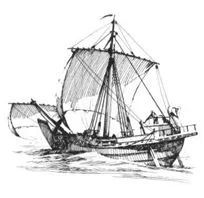
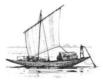
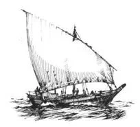
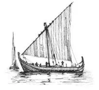

Были ли арабы изобретателями латинского паруса.
Известно, что одной из отличительных признаков средневековой галеры было наличие латинского парусного вооружения. Мы еще обязательно поговорим о возникновении латинских парусов на галерах, но сейчас хотелось бы несколько слов сказать об истории возникновения косых, в том числе латинских, парусов вообще.
Кто и когда изобрел латинский парус – неизвестно. Поэтому, как обычно в таких случаях, нет недостатка в гипотезах, порою взаимно исключающих друг друга, окрашенных плохо скрытыми попытками утвердить национальные приоритеты (постулат «Россия – родина слонов» касается не только России и не только слонов). Принцип действия латинского паруса коренным образом отличается от принципа работы прямого паруса. Он устанавливается не поперек, а практически вдоль ветра, и движущая сила является составляющей разности давлений между вогнутой и выпуклой частями паруса, совершенно так же, как образуется подъемная сила крыла самолета. Основные преимущества латинского паруса – он оказывает меньшее сопротивление движению, более эффективно используется при слабом ветре и позволяет идти круче к ветру, чем при использовании прямого паруса. Так почему же так долго длилось господство прямого паруса?
Имелась только одна причина, по которой большой прямоугольный парус оставался в течение многих и многих веков на судах, совершавших плавание по Нилу. Эта река, как известно, течет с юга на север, в то время как преобладающие ветры дуют с севера на юг. Следовательно, когда судно спускалось вниз по течению, рангоут рубили и за дело брались гребцы. На обратном пути дул устойчивый попутный ветер, который не требовал лавирования для следования вверх по течению. Простота в конструкции прямых парусов и управлении ими способствовали такому длительному их господству на египетских, а затем и других средиземноморских судах. Прямой парус не нуждается в переходе с галса на галс при незначительном изменении направления попутного ветра, тогда как использование косых парусов в этом случае требует от экипажа постоянного внимания.
Наиболее вероятно переход от прямого к латинскому парусу выглядит следующим образом. Используя прямой парус, мореплаватели заметили, что когда судно идет не точно в фордевинд, эффективность паруса можно повысить, если повернуть его таким образом, чтобы он оказался перпендикулярно ветру. Если эта техника используется при наличии у судна киля или рулевого устройства (а лучше – и того и другого вместе), то можно выбирать курс судна относительно ветра в более широких пределах, а не просто перемещаться вдоль направления ветра.    
Если направление ветра приближается к траверзу, т.е. судно идет близко к курсу бакштаг, этот прием начинает срабатывать хуже, однако падение движущей силы может быть частично скомпенсировано, если наветренную шкаторину паруса направить навстречу ветру. Этот метод хорошо срабатывает, если наветренная шкаторина туго натянута, что может быть достигнуто наклоном наветренной части верхней реи (или гафеля) вниз. Использование прямого паруса таким образом – прямой путь к изобретению латинского паруса, возможно, через промежуточное использование четырехугольного рейкового (люгерного) паруса (когда четырехугольный парус крепится верхней шкаториной к рейку, причем реек и нижняя мягкая шкаторина паруса выступают впереди мачты). Кэмпбелл в своем исследовании «Латинский парус в мировой истории» (Journal of World History, Spring 1995), считает, что специфическая форма латинского паруса акватории Индийского океана увеличивает правдоподобие этой гипотезы: короткая кромка наветренной шкаторины является, возможно, остатком первоначальной шкаторины прямого паруса. Однако это остается только гипотезой, не подтвержденной материальными свидетельствами. Развитие косого парусного вооружения в зоне Тихого океана и Юго-Восточной Азии следовало своими путями, независимыми от развития паруса в Средиземноморье, что подтверждает гипотезу о двух, а возможно и о трех независимых направлениях развития латинского паруса.
Наиболее острые споры развернулись вокруг вопроса, имеет ли латинский парус средиземноморское происхождение или он первоначально появился в Индийском океане и привнесен в Средиземное море арабами. Сторонники второй версии приводят в ее подтверждение следующие доводы. Латинский парус был повсеместно известен под именем «арабского паруса», заимствованием которого мореплаватели Запада значительно повысили эффективность своего флота. Далее, отсутствуют свидетельства о наличии в Средиземном море латинского вооружения до конца девятого века, т.е. по прошествии почти двух веков с начала действия арабских кораблей в Средиземноморье (George F. Hourani, Arab Seafaring in the Indian Ocean in Ancient and Early Medieval Times (Princeton, 1951)).
Однозначно решает этот вопрос и наш арабист Шумовский Т.А. В своей книге «Арабы и море» (1964 г., с.173) он пишет:
«Перенесенный арабскими мореходами из Индийского океана в Средиземное море и ставший достоянием Европы, носо-кормовой треугольный парус произвел революцию в европейском парусном мореплавании. Переход от первобытного одномачтовика с прямоугольным парусом к трехмачтовым кораблям с арабским треугольником дал возможность парусному судну идти против ветра, то есть практически в. любом выгодном ему направлении, откуда возникла техническая возможность осуществить экспедиции Колумба, Васко да Гамы, Магеллана и их преемников.»
Р.Боуэн (Richard LeBaron Bowen, “Arab Dhows of Eastern Arabia,” The American Neptune 9 (1949): 92) тоже полагает, что вероятнее всего родиной латинского паруса является Индийский океан, так как в рассмотренной выше эволюции парусного вооружения от прямого к латинскому именно в Индийском океане присутствуют промежуточные между ними видоизменения паруса. В Средиземном же море не обнаружены паруса, которые можно было бы считать предшественниками латинского. Вместе с тем Р.Боуэн считает, что неправильным было бы приписывать изобретение латинского паруса арабам. Он полагает, что арабы проявили себя мореплавателями слишком поздно, чтобы считаться изобретателями латинского паруса. По мнению этого авторитетного ученого, арабы переняли знания морского дела у персов вместе с морским словарем, принципами навигации и, возможно, и латинским парусным вооружением. А уж затем арабы перенесли латинский парус в Средиземное море. Подтверждает эту гипотезу, якобы, тот факт, что первые изображения латинского паруса в средиземноморском изобразительном искусстве появились в девятом веке. В связи с этим уместно привести замечание Ван Доорнинка, приведенное в сборнике A History of Seafaring Based on Underwater Archaeology, (ed. George F. Bass (London, 1972), p. 146) о том, что иллюстраторы манускриптов, как правило, работали с традиционными стереотипными формами и редко вводили новации в свое искусство. Так что треугольные латинские паруса могли появиться задолго до того, как их изображения стали использоваться в иллюминированных рукописных текстах. Следовательно, этот факт дает основание для заявления лишь о том, что латинские паруса на Средиземном море появились «не позднее, чем» в IX веке. Но главная трудность в продвижении этой гипотезы заключается в том, что, как в более раннем исследовании заявил тот же Боуэн, нет ни одного свидетельства об использовании латинского паруса в западной части Индийского океана до появления там португальцев. Правда, имелись предположения, что рейковый (люгерный) парус мог быть занесен в западную часть Индийского океана греческими купцами, ведущими торговлю с Индией в эпоху господства Рима. И все же , несмотря на самые тщательные научные поиски, не удалось найти ни одного литературного или изобразительного свидетельства о типах парусного вооружения, используемого в западной части Индийского океане до XV века. Приводимые Дж.Хурани в подтверждение гипотезы о том, что арабы использовали латинский парус, свидетельства из арабской поэзии IX-X вв. не выдерживают никакой критики. Поэтические образы сравнивают корабельный парус вдалеке с плавником кита или выпускаемым им фонтаном. На этом основании Дж.Хурани делает вывод, что имеется в виду скорее латинский, чем прямой парус. Но у кита нет спинного плавника, а фонтан, выпускаемый китом, похож скорее на облако пара, чем на какую-то определенную форму. Это скорее чисто романтический образ, не дающий ключа к форме паруса. Не проясняют вопрос и сохранившиеся характеристики паруса арабских судов, которые приводит Ибн-Маджид (XV в.). Он указывает, что отношение длины наветренной шкаторины к длине подветренной равно 10:13,5, т.е парус почти прямой, и это скорее люгерный, чем латинский парус (Arab Navigation in the Indian Ocean before the Coming of the Portuguese (London, 1971), p. 52. )
Продолжим это обсуждение в следующий раз.